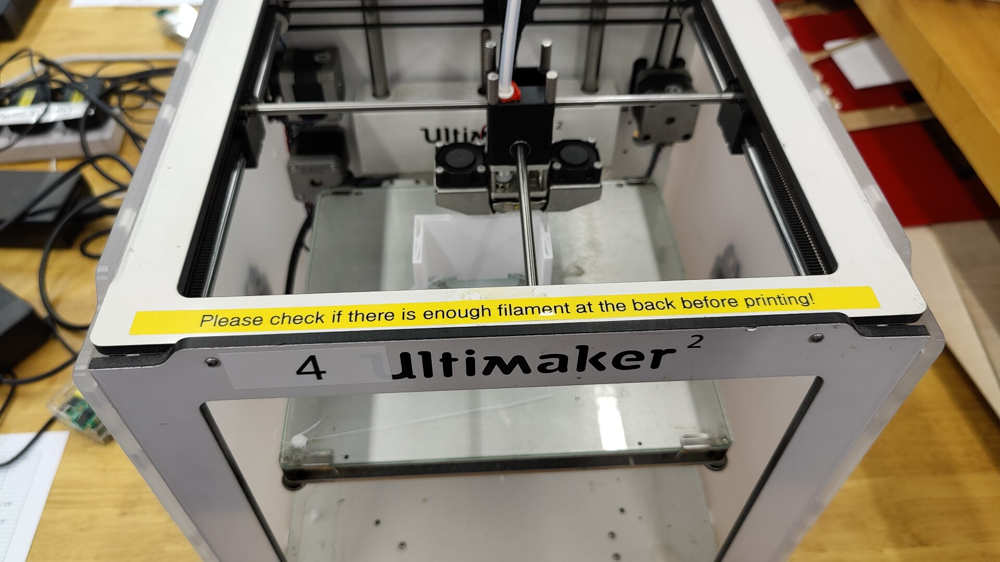
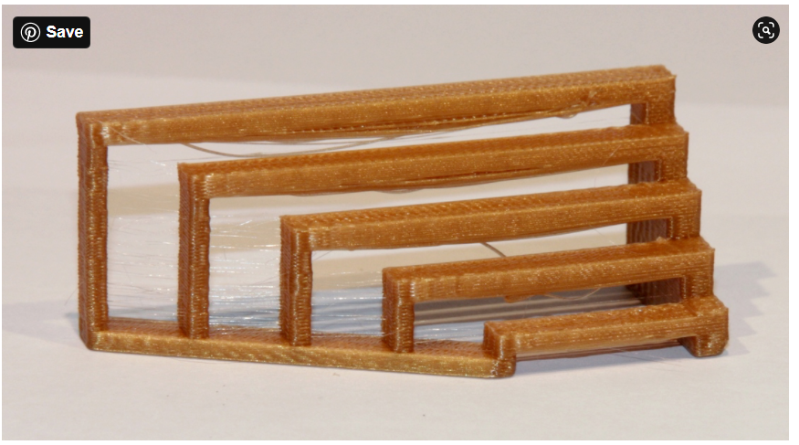

3D printing using Ultimaker Cura
3D printing is the act of using a 3D printing machine to create a 3D object that is done using Computer Aided design(CAD). 3D printing machines reads GCODE files to print the designed object layer by layer. The printing process takes varing time depending on how detailed the design is, how dense the object is and how large your design is.
To start printing, you must first have a design ready, you can either download a design from the internet Nice Site! or you can create on using CAD software such as Fusion 360.
From Fusion 360 , to export a design for 3D printing, you have to make sure that the design is in 1 piece(Combine Option) and follow on to export the the design as a STL file for 3D printing. Right click the body and select save as STL , this will prep your design for 3D printing.
Printers that we use in school are of the Ultimaker 2+ that uses a SD card to input the design. Before sending the design for printing, we must make adjusments and change the file type to GCODE. This can be accomplished with the Ultimaker Software. Inside the software, you can change the
- Size of the design, to change to time taken to print.
- The infill density, to change time taken to print and the density of the print. Normally a density of between 10-20% is used
- Layer height, greatly reduces the time for printing. Normally 0.2m, 0.3m for fast print
- Generate support for hanging/floating components to make it possible for printing.
- Other than these, the rest of the settings should be kept the same, for beginners.
After adjusting the print to your liking, clicking on the slice button will give u the time taken for the print. Now, to start printing, insert the SD card(SD card for this case) into your pc/laptop and select "Save to removable device" This will make a copy of the file onto the SD card and prep it for printing. Now the only thing for you to is to insert the SD card back into the 3D printing machine and start printing!

When the printer starts printing, it should first take a while to heat up and vomit a little turd on the corner, this will give you the indictation that everything is working fine. Remember to check if there is enough Filament before printing for extended periods!!
Group project :
To test the limitations of 3D printing with bridging, overhang,infill density and clearance.
Infill density
infill desnsity greatly affects the strength and the time takes for the object to be printed. For this test, we shall be looking at 3D printed cubes with ranging densities from 0% to 100%. As you can see, as the density increases, the less space there is in the cube, this results in a stronger structure but a tradeoff to print time.
Bridging
bridging is having hanging filament suspended between 2 points without any support. Over bridging will cause the filament to sag and ruin the structure of your design. Here we shall test bridging over 5 lengths with each being 1cm longer than the last. As you can see, as it goes past the 3rd bridge, an obvious sagging can be seen with the filaments being bent.

Overhang
overhang is having hanging filament hanging from one support over a angle without any support. Overhang over too large of a angle might cause disruption to the structure . We tested overhang over angles from 30-70 degrees. From 45degrees onwards, fillaments can be seen sagging slightly, but still of an acceptable range.
Clearance
clearance happens due to the inaccuracy of printing or surface finish. This causes a slight difference between the design and the actual print.